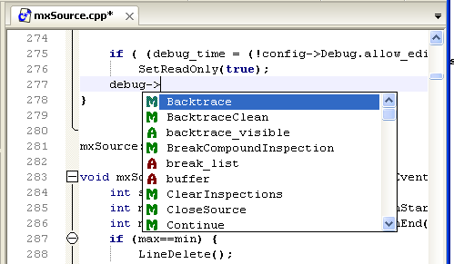

Autocompletado
El autocompletado le permite escribir más rápidamente su código mostrando un menú con los posibles nombres (de funciones, métodos, variables, macros, etc) que puede querer ingresar en un momento. Este menú se despliega automáticamente (si hay al menos una opcion) cuando el usuario ya ha ingresado tres letras de una palabra, o cuando se introduce introduce algun operador de scope para acceder a un metodo o atributo de una clase (".", "->" ó "::"). También puede desplegarse manualmente presionando Ctrl+Espacio (debe luego de un operador adecuado, o habiendo escrito al menos una letra). Las opciones que se muestran en el menú se conforman a partir de las listas de autocompletado estándar y la información recabada en el árbol de símbolos. ZinjaI analiza el contexto de la palabra que está escribiendo, determina si es cuales son las posibilidades y presenta el menú con las mismas. Como ayuda adicional, el menú contiene al lado de cada opción un ícono indicando si se trata de un metodo, un atributo, una funcion, una macro o una variable global; para esto se utlizan los mísmos íconos que en el Arbol de Simbolos. Es importante que este árbol contenga información actualizada para que las opciones mostradas sean las correctas. Recuerde que aunque se actualiza automáticamente en determinados momentos, puede actualizarlo manualmente cuando lo requiera con la tecla F2.

Como ventaja adicional, dado que cada vez que se intenta mostrar el menú de autocompletado se debe parsear parcialmente el código fuente para determinar que elementos incluir en el menú, algunos errores de sintaxis o coherencia interna del código pueden ser detectados durante este proceso e informados al usuario. Por ejemplo, cuando intente utilizar el operador -> con un objeto que no es un puntero, o por el contrario cuando intente utilizar el . con un objeto que si es un puntero.
Para activar o desactivar esta características, o para elegir que diccionarios estándar utilzar debe referirse a la pestaña Asistencias del diálogo de Preferencias.
Actualmente el autocompletado muestra correctamente funciones, metodos, atributos, macros y variables globales. No muestra nombres de variables locales, aunque si es capaz de autocompletar metodos y atributos de las mismas. Tambien soporta parcialmente la resolución de macros y el uso de templates.